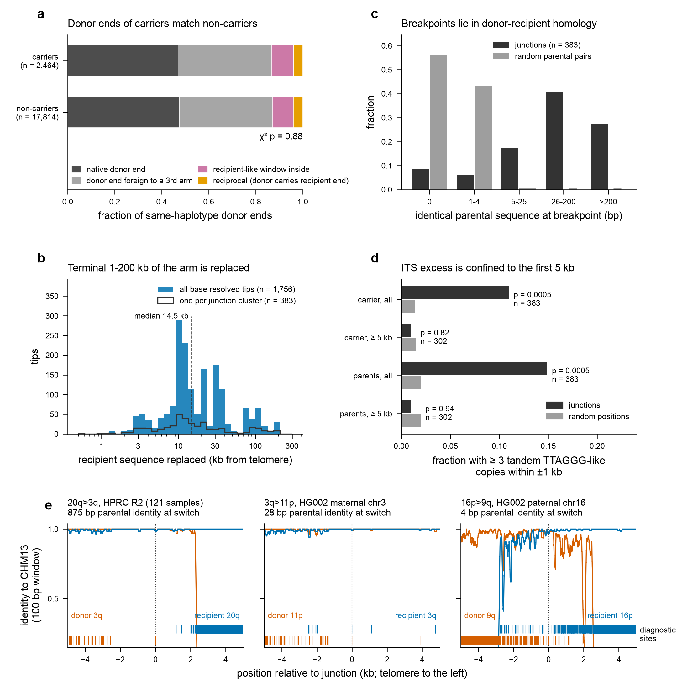

Findings › Mechanism at junctions (H2)
Foreign terminal blocks arise by one-way, homology-mediated transfer
Definitions: this analysis used the earlier per-window best-end form calls (e.g. 20q>3q); its counts are not directly comparable with catalogue revision-2 S20, form or nativity counts. See the concordance table.
Full methods, statistics and reproduction instructions: analyses/junctions/README.md
(results tables in analyses/junctions/results/; reproduce with bash analyses/junctions/run.sh).
Verdicts
Verdict (H2a, reciprocal exchange as the general mechanism): negated — donor-end state is independent of carrier status (chi-square p = 0.88; reciprocal 3.86% vs 3.91%), the replaced recipient sequence is generally not present elsewhere above paralogue background (Release 2 ends 49/2,146; HG002 genome 2/18), consistent with one-way, duplicative transfer (break-induced replication / gene conversion-like terminal copying or non-reciprocal translocation with loss of the recipient end). A minority of clusters have complementary reverse-form alleles (30/233), including two HG002 paternal configurations; these are candidate reciprocal events.
Verdicts: homology at the junction — confirmed (mh_parental > 25 bp in 261/383 vs 0.001% expected; p = 0.0005); microhomology-mediated / blunt end-joining as the main mechanism — negated (only 56/383 junctions are non-homologous at the 500 bp scale: 22 blunt, 19 with 1-25 bp microhomology, 15 with short > 25 bp homology); ITS enrichment at junctions — negated beyond the telomere-proximal 5 kb (p = 0.82; the all-junction excess is a telomere-proximity effect).
Figures

Foreign terminal blocks arise by one-way transfer joined within donor-recipient homology. (a) Status of the donor arm's telomeric end in the same haplotype assembly, pooled over the 104 forms with >= 10 carrier tips (HPRC Release 2): carriers of form R>D (n = 2,464 assessed donor ends; 1,418 carriers had no assembled named donor end) versus haplotypes whose R end is assessed but does not carry R>D (n = 17,814); chi-square test on the four categories. (b) Distance from the CHM13 recipient telomere at base-resolved switches (= own terminal sequence replaced); filled: all base-resolved tips, outline: one representative per junction cluster. (c) Length of sequence identical between the two CHM13 parental ends at the breakpoint (forward + backward extension from the junction coordinates) for 383 junction-cluster representatives versus 2000 random position pairs per junction in the same two parental ends (5-200 kb from the telomere). (d) Interstitial telomere-like arrays (>= 3 in-phase TTAGGG/CCCTAA copies with <= 1 mismatch each) within +-1 kb of the junction in the carrier and in either parent, versus random positions in the same sequences; '>= 5 kb' = junctions >= 5 kb from the telomere in carrier and both parents; one-sided permutation p. (e) 100 bp rolling identity of three exemplar carriers to the donor (orange) and recipient (blue) CHM13 ends around the junction (single best alignment on each side); ticks below: diagnostic sites where the carrier matches only the donor (orange) or only the recipient (blue, includes bases where the donor does not align). Read support: E2 and E3 are crossed by 42 and 54 ONT UL and 21 and 22 PacBio Revio primary alignments (switch +-5 kb, none clipped at the switch).
(full resolution, PDF)Caveats
- Donor-end classification rests on 20 kb (6,158 tips) or 100 kb (5,840 tips) windows; donor ends that were never assembled telomere-to-telomere (36% of carriers) are not assessed. Window labels inherit the CHM13 48-end placement and its paralogy: related donor ends (3q/11p/19p/15q, 4p/15p, 1p/6q) are often near-equivalent, so 'replaced by a third arm' includes paralogous variants of the same block.
- The Release 2 lost-sequence search only covers chromosome ends; the genome-wide test is limited to HG002 (18 ends).
- Breakpoint complementarity has no explicit null model; matches may reflect shared homology boundaries.
- Base-resolved junctions are 1,810/4,594 foreign tips; window-resolved and 'through' tips are not in the junction feature tests. Junction coordinates are CHM13-relative.
- ITS detection uses a strict in-phase tandem definition; degenerate or short interstitial repeats beyond 1 mismatch per copy are not counted.